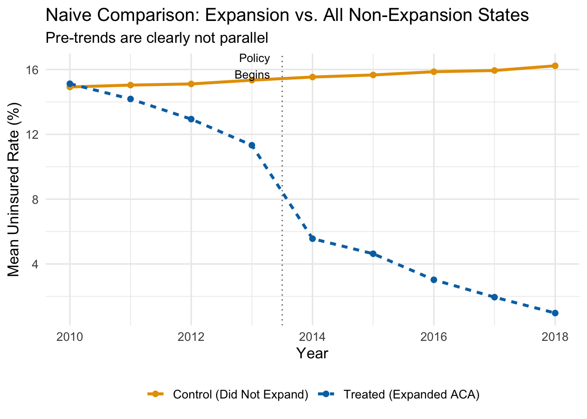
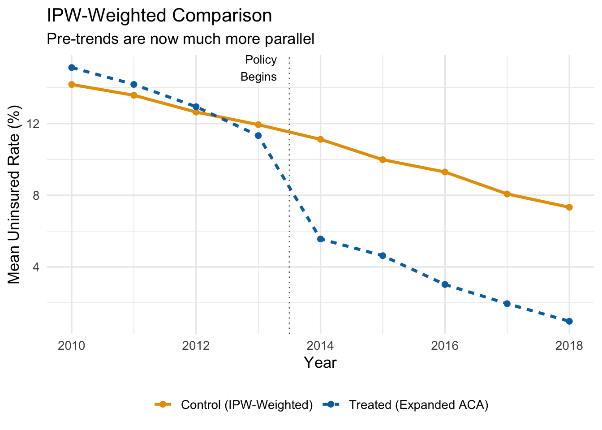
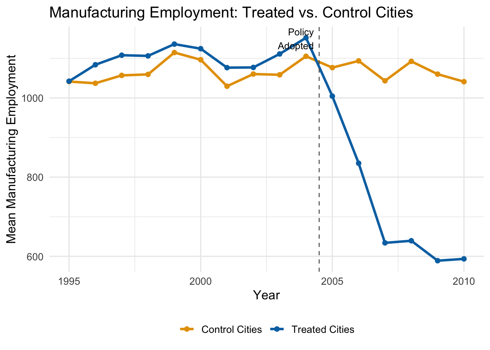
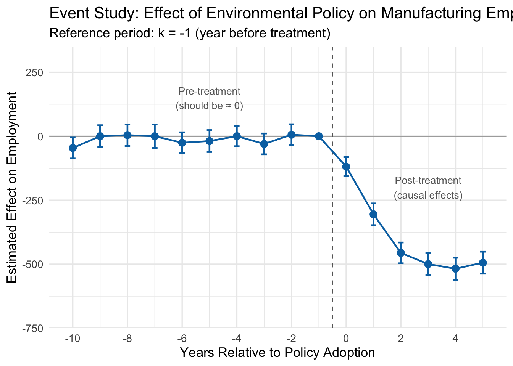
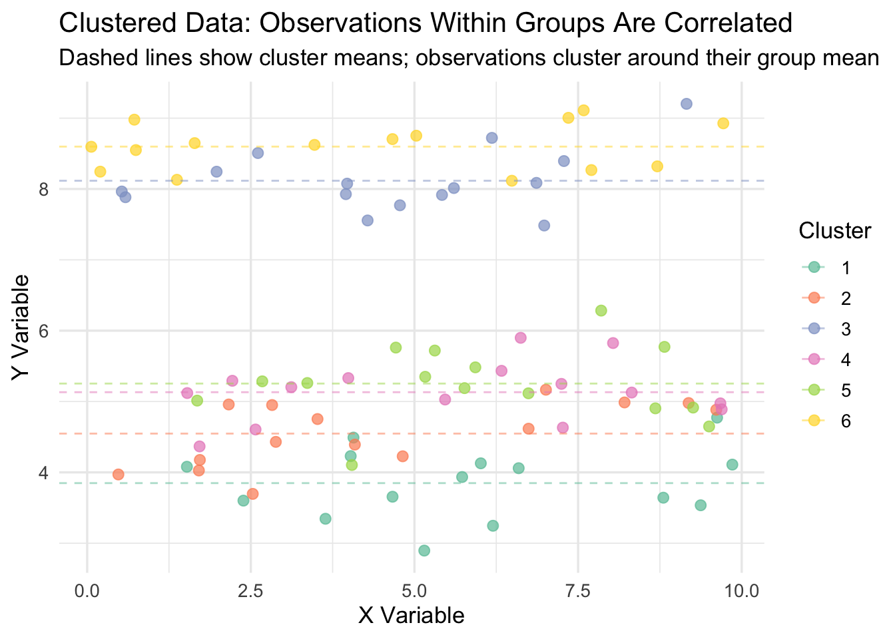
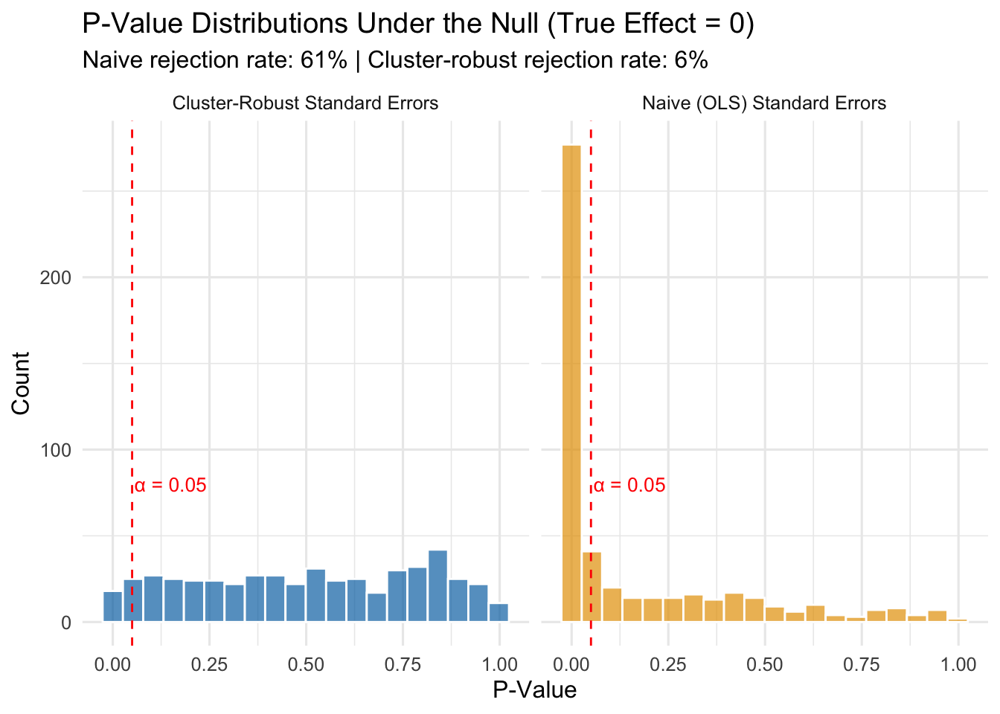

12 Advanced Difference-in-Differences
Key Questions
- How can we use data to select better control units for DiD?
- What are propensity scores and how do they improve DiD estimates?
- How do we estimate treatment effects that change over time?
- What is an event study and how do we interpret it?
- Why do we need cluster-robust standard errors in panel data?
Suggested Readings
- TBD
The basic difference-in-differences framework is powerful, but real-world applications often require more sophisticated tools. This chapter covers three important extensions: data-driven control selection using propensity scores, dynamic DiD for effects that evolve over time, and cluster-robust standard errors for proper inference with grouped data.
12.1 Data-Driven Control Selection
12.1.1 The Problem: Systematically Different Treatment and Control Groups
In the previous chapter, we emphasized that your DiD estimate is only as good as your counterfactual. When treated and control groups are systematically different, the parallel trends assumption becomes implausible.
Consider estimating the effect of the Affordable Care Act (ACA) Medicaid expansion on uninsured rates. States that expanded Medicaid are very different from states that didn’t: they tend to be more politically liberal, have different demographics, different industries, and different baseline health care systems.
Using all non-expanding states as controls produces biased estimates because these states were on different trajectories even before the policy.
The figure shows that even before the ACA expansion in 2014, treated states had steeper downward trends in uninsured rates. This pre-existing difference would be incorrectly attributed to the policy in a naive DiD analysis.
12.1.2 Propensity Score Weighting: The Intuition
The solution is to find control units that are similar to treated units. If we could compare only states that were “on the verge” of expanding but didn’t, we would have a much better counterfactual.
Propensity score methods formalize this intuition. The idea is:
- Estimate each unit’s probability of being treated based on observable characteristics
- Give more weight to control units that “look like” they should have been treated
- Use these weights in the DiD regression
Control units with high propensity scores (high predicted probability of treatment) but who weren’t actually treated become our primary comparison group. They’re similar to treated units on observables, making parallel trends more plausible.
12.1.3 The IPW-DiD Algorithm
Inverse Propensity Score Weighted DiD (IPW-DiD) proceeds in three steps:
Step 1: Estimate the Propensity Score
We estimate a logistic regression predicting treatment status from pre-treatment characteristics:
\[ P(D_i = 1 | X) = G(\beta_0 + \beta_1 X_1 + \beta_2 X_2 + ... + \beta_k X_k) \]
where \(G()\) is the logistic function and the \(X\) variables are characteristics that predict treatment.
For the ACA example, we might include political leaning (Democratic vote share), region, and baseline poverty rates.
# Aggregate to state level for propensity score estimation
state_data <- panel_data |>
filter(post == 0) |> # Use only pre-treatment data
group_by(state_id, is_expanded) |>
summarize(
dem_share = mean(X1),
region = mean(X2),
poverty = mean(X3),
.groups = 'drop'
)
# Estimate propensity scores with logistic regression
ps_model <- glm(is_expanded ~ dem_share + region + poverty,
data = state_data,
family = binomial("logit"))
# Get predicted probabilities
state_data <- state_data |>
mutate(ps_score = predict(ps_model, type = "response"))Step 2: Calculate IPW Weights
The inverse propensity weights are:
\[ IPW_i = D_i + (1 - D_i) \times \frac{\hat{P}_i}{1 - \hat{P}_i} \]
- For treated units (\(D_i = 1\)): weight = 1
- For control units (\(D_i = 0\)): weight = \(\frac{\hat{P}_i}{1 - \hat{P}_i}\)
Control units with high propensity scores get large weights; those with low propensity scores get small weights.
# Calculate IPW weights
state_data <- state_data |>
mutate(
ipw = case_when(
is_expanded == 1 ~ 1,
is_expanded == 0 ~ ps_score / (1 - ps_score)
)
)
# Show example weights
state_data |>
select(state_id, is_expanded, ps_score, ipw) |>
arrange(desc(ipw)) |>
head(8) |>
knitr::kable(digits = 2, caption = "Example IPW Weights")| state_id | is_expanded | ps_score | ipw |
|---|---|---|---|
| 32 | 0 | 0.86 | 5.94 |
| 181 | 0 | 0.79 | 3.77 |
| 51 | 0 | 0.75 | 3.06 |
| 101 | 0 | 0.69 | 2.26 |
| 31 | 0 | 0.65 | 1.85 |
| 150 | 0 | 0.63 | 1.71 |
| 29 | 0 | 0.61 | 1.58 |
| 106 | 0 | 0.59 | 1.41 |
Step 3: Estimate Weighted TWFE
Finally, we estimate the standard TWFE DiD regression but using the IPW weights:
# Merge weights into panel data
panel_weighted <- panel_data |>
left_join(select(state_data, state_id, ipw), by = "state_id")
# Naive (unweighted) DiD
did_naive <- feols(uninsured_rate ~ treat_active | state_id + year,
vcov = "HC1",
data = panel_data)
# IPW-weighted DiD
did_ipw <- feols(uninsured_rate ~ treat_active | state_id + year,
vcov = "HC1",
weights = ~ipw,
data = panel_weighted)12.1.4 Comparing Results

The IPW-weighted trends are much more parallel in the pre-period! This gives us greater confidence in the parallel trends assumption.
| Method | Estimate | True Effect |
|---|---|---|
| Naive DiD (all controls equal weight) | -10.91 | -5 |
| IPW-Weighted DiD | -6.24 | -5 |
The naive estimate is substantially biased (too negative) because it attributes pre-existing trends to the policy. The IPW-weighted estimate is much closer to the true effect of -5 percentage points.
Key Insight
IPW-DiD works by reweighting the control group so that it looks more like the treatment group on observable characteristics. This makes parallel trends more plausible—but the method is only as good as your propensity score model. If important confounders are omitted, bias remains.
12.2 Dynamic DiD and Event Studies
12.2.1 Why Treatment Effects May Change Over Time
The basic DiD model estimates a single treatment effect that applies to all post-treatment periods. But many policies have effects that evolve over time:
- A job training program might have small initial effects that grow as workers gain experience
- A minimum wage increase might have immediate disemployment effects that fade as firms adjust
- An environmental regulation might have growing effects as compliance increases
Dynamic DiD allows us to estimate separate treatment effects for each time period, capturing how the policy impact unfolds.
12.2.2 Relative Time
Dynamic DiD models use relative time—the number of periods since treatment occurred—rather than calendar time. If treatment occurs in 2015:
| Calendar Year | Relative Time |
|---|---|
| 2012 | -3 |
| 2013 | -2 |
| 2014 | -1 |
| 2015 (treatment) | 0 |
| 2016 | +1 |
| 2017 | +2 |
This framing lets us estimate effects at each distance from treatment and, crucially, test whether pre-treatment “effects” are zero (as they should be if parallel trends holds).
12.2.3 The Dynamic DiD Model
The dynamic DiD model includes dummy variables for each relative time period:
\[ y_{it} = \sum_{k \neq -1} \beta_k D_{it}^k + \alpha_i + \tau_t + \mu_{it} \]
where \(D_{it}^k = 1\) if unit \(i\) is treated and period \(t\) is \(k\) periods from treatment.
We omit \(k = -1\) (the period just before treatment) as the reference category. All coefficients are interpreted relative to this baseline.
12.2.4 Example: Environmental Policy and Manufacturing Employment
Suppose we want to estimate how an environmental regulation affects manufacturing employment in cities. We have data on 50 cities observed from 1995 to 2010, with 25 cities adopting the policy in 2005.
Let’s visualize the raw trends first:

The trends are parallel before 2005, then the treated cities experience a growing decline in manufacturing employment.
12.2.5 Estimating the Dynamic Model
# Estimate dynamic DiD (note: rel_t_treat_-1 is omitted as reference)
dyn_did <- feols(
manufacturing_emp ~ `rel_t_treat_-10` + `rel_t_treat_-9` + `rel_t_treat_-8` +
`rel_t_treat_-7` + `rel_t_treat_-6` + `rel_t_treat_-5` + `rel_t_treat_-4` +
`rel_t_treat_-3` + `rel_t_treat_-2` + `rel_t_treat_0` + `rel_t_treat_1` +
`rel_t_treat_2` + `rel_t_treat_3` + `rel_t_treat_4` + `rel_t_treat_5` |
city_id + year,
vcov = "HC1",
data = env_data
)12.2.6 The Event Study Plot
The best way to present dynamic DiD results is an event study plot. We plot each coefficient with its 95% confidence interval, with the x-axis showing relative time and a vertical line at the treatment date.

12.2.7 Interpreting the Event Study
The event study plot reveals several important patterns:
Pre-treatment coefficients (k < -1): These cluster around zero with confidence intervals that include zero. This is strong evidence for parallel trends—before the policy, treated and control cities were on similar trajectories.
Reference period (k = -1): This is normalized to zero by construction.
Post-treatment coefficients (k ≥ 0): These show the causal effect of the policy. The effect starts at about -100 in the adoption year and grows to about -500 by year 3, where it levels off.
Why Pre-Trends Matter
The pre-treatment coefficients serve as a placebo test. If we found large, significant “effects” before the policy was implemented, that would suggest our control group is invalid—the groups were already diverging for reasons unrelated to the treatment.
12.3 Cluster-Robust Standard Errors
12.3.1 The Problem: Non-Independent Observations
Standard OLS assumes observations are independent. But in panel data, observations from the same unit across time are often correlated. Students in the same classroom share a teacher; workers in the same firm share management; residents of the same state share policies.
When errors are correlated within clusters, standard errors from regular OLS are too small. This leads to:
- T-statistics that are too large
- P-values that are too small
- Confidence intervals that are too narrow
- Too many false positives (Type I errors)
12.3.2 Visualizing the Problem

12.3.3 Simulation: The Dangers of Ignoring Clustering
Let’s simulate what happens when we ignore clustering. We’ll generate data where the true treatment effect is zero, so any “significant” result is a false positive.

The simulation shows that:
- With naive standard errors: We reject the null 61% of the time (should be 5%)
- With cluster-robust standard errors: We reject 6% of the time (close to 5%)
Ignoring clustering leads to a massive inflation of false positives!
12.3.4 Implementing Cluster-Robust Standard Errors
In fixest, cluster-robust standard errors are easy to implement using the cluster argument:
# Standard (naive) standard errors
model_naive <- feols(y ~ treatment | state + year,
vcov = "HC1",
data = my_data)
# Cluster-robust standard errors (clustered at state level)
model_cluster <- feols(y ~ treatment | state + year,
cluster = "state",
data = my_data)
Rule of Thumb: Cluster at the Treatment Level
Cluster your standard errors at the level where treatment is assigned. If policies are set at the state level, cluster by state. If a program is implemented at the school level, cluster by school.
12.4 Summary
This chapter covered three important extensions to basic DiD:
Propensity Score Weighting (IPW-DiD) improves the counterfactual by up-weighting control units that are similar to treated units. When treated and control groups differ systematically, naive DiD violates parallel trends; IPW helps restore balance. The algorithm involves estimating propensity scores, computing inverse probability weights, and using those weights in the TWFE regression.
Dynamic DiD and Event Studies allow treatment effects to vary over time. By estimating separate effects for each period relative to treatment, we can see whether effects grow, shrink, or remain stable. Crucially, the pre-treatment coefficients serve as a placebo test: if they’re significantly different from zero, parallel trends is violated.
Cluster-Robust Standard Errors correct for correlated errors within groups. When observations within clusters (states, schools, firms) are correlated, standard OLS inference is overconfident, leading to inflated false positive rates. Clustering at the treatment level provides valid inference.
These tools are essential for credible DiD analysis in practice.
12.5 Check Your Understanding
For each question below, select the best answer from the dropdown menu.
Show Explanation
Control units with high propensity scores (high predicted probability of being treated) but who weren’t actually treated receive higher weights. The intuition is that these units are most similar to treated units on observables, making them better comparisons. The IPW formula gives them weight = P/(1-P), which increases with P.
We need to omit one period to avoid perfect collinearity (similar to the dummy variable trap). We choose k = -1 because it’s the natural baseline: all treatment effect estimates are then interpreted as differences from the period immediately before treatment began.
Pre-treatment coefficients should be zero if parallel trends holds—there should be no “effect” of a treatment that hasn’t happened yet. If these coefficients are significantly different from zero, it suggests treated and control groups were already diverging before the policy, violating the key identifying assumption.
When observations within clusters are correlated, regular standard errors treat them as independent, underestimating the true uncertainty. This makes standard errors too small, t-statistics too large, p-values too small, and confidence intervals too narrow—leading to excessive false positives.
The rule is to cluster at the level of treatment assignment. Since minimum wage policies are set at the state level, you should cluster by state. This accounts for correlation in outcomes among all workers within the same state who share the same policy environment.
Significant pre-treatment effects are a red flag. They suggest the treated and control groups were on different trajectories before the policy—meaning any post-treatment difference could reflect these pre-existing trends rather than the causal effect of the policy. This casts serious doubt on the validity of the control group and the DiD estimate.